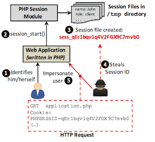
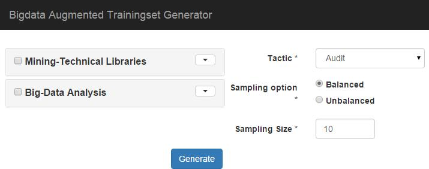
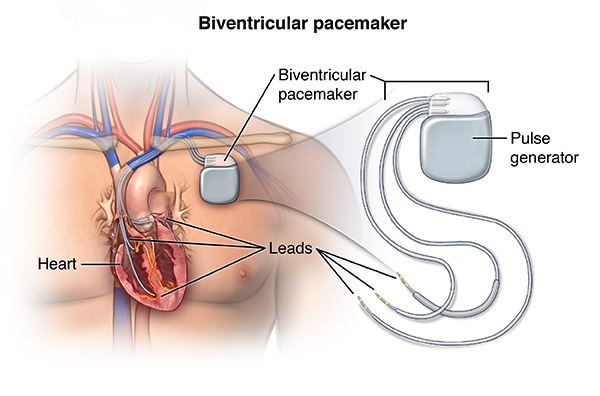
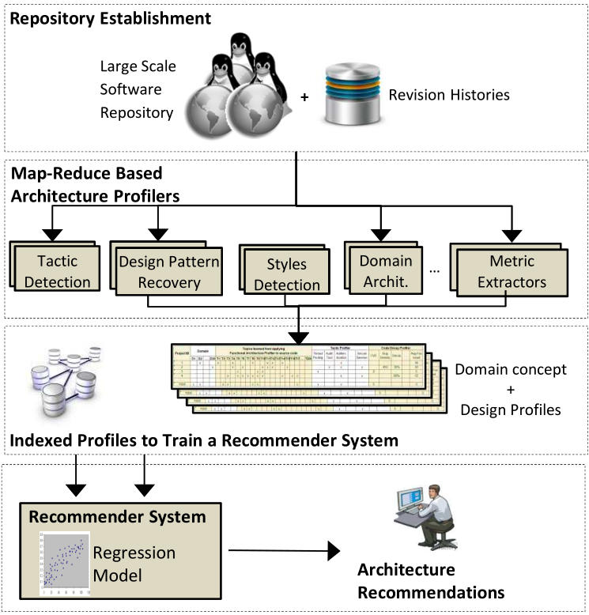
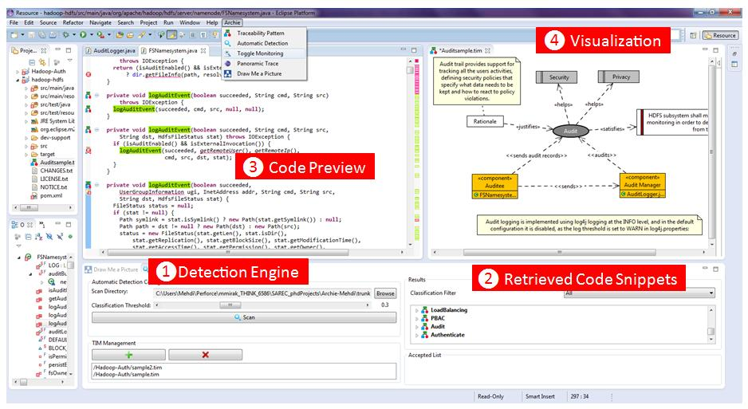

Email: mehdi -at- se.rit.edu
Director of Research | ESL Global Cybersecurity Institute
Kodak Endowed Scholar, Associate Professor | Software Engineering Department
Rochester Institute of Technology
134 Lomb Memorial Drive
Rochester, NY 14623-5608
Email: mehdi -at- se.rit.edu

|
Development of Software Tools to Increase Developers Productivity
Application of Data Mining Techniques to Solve Software Engineering, Software Safety, and CyberSecurity problems Software Architecture Design, Implementation, and Maintenance Big Data Analysis and Software Engineering Active Research ProjectsSoftware Architecture and Security: Common Architecture Weakness Enumeration (CAWE)

Keywords: #Cybersecurity, #Architecture, #Vulnerability, #Design
Project's Webpage>> Leveraging BigData Analysis to Generate Scientific Datasets for Researchers.

In this project, we work on delivering solutions to create, validate, and share high-quality datasets necessary to drive future software traceability research. Our approach which is named Bigdata aUgmented Dataset GEneraTor (BUDGET), uses an ultra-large-scale code repository of 2 Million open source projects (in various programming languages) and extracts useful, connected, semantically cohesive traceability artifacts from this repository. In order to solicit high-quality traceability artifacts, BUDGET implements previously proven Information Retrieval (IR) methods, Natural Language Processing (NLP) algorithms, Data Mining techniques, Code Dependency analysis, and Heuristic-based tools.
Keywords: #BigData, #Information_relatival, #Training Set, #large scale repositories, #web mining
Project's Webpage>> Proactive Approach to Medical Devices Safety, Security, and Privacy.

Before a medical device can be used in the clinical environment, the manufacturer must demonstrate that the device provides a medical benefit in routine clinical use, and also the device is hazard free. Demonstrating that a device is safe, secure and reliable systems is difficult. Certification and regulatory agencies routinely require full life-cycle traceability for the demonstration of fitness. Software traceability plays a critical role in demonstrating that a delivered software system satisfies all of its software design constraints and mitigates all identified hazards and threats. In this project we are developing Medical Device Development Tools that use safety and security reference models to help the manufacturer demonstrate that:
Keywords: #Medical_Device, #Cyber_Secyrity, #Safety, #Traceability, #Compliance
Project's Webpage>> Stimulating Design Thinking in Software Developers using Recommender Systems

Keywords: #DesignThinking, #Architecture, #Recommender System, #Architecturally Signinifact Code
Project's Webpage>> Artifacts Search Engines to Increase Developers Productivity
Developers often resort to using search engines, crowd-sourcing websites, or discussion forums to find
useful information about a particular development task ranging from technical information about a security APIs to how to write a unit test for a multi-threaded program.
A fundamental problem of finding implementation artifact is the mismatch between the high-level intent reflected in the descriptions of these artifacts
and the low-level implementation details of them.
In this project, we develop custom search and rank algorithms to reduce this mismatch and help developers find a diverse set of artifacts matching their development challenges.
Keywords: #Search Engine, #Ranking, #Source Code, #Artifacts
Project's Webpage>> Previous Research ProjectsArchie Smart IDE

Archie introduces a pluggable tool which provides an architectural protection layer for use in a variety of programming IDEs and software modeling tools.
Tracing Architecturally Significant Requirements to Source CodeA Pattern System for Tracing Architectural Concerns |
|